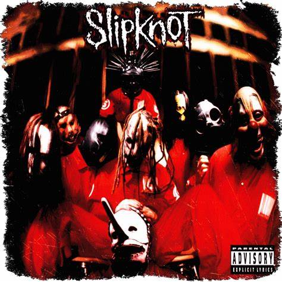
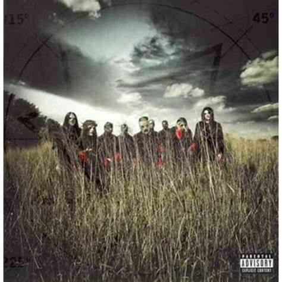
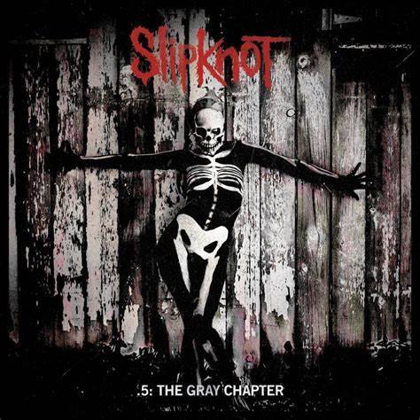
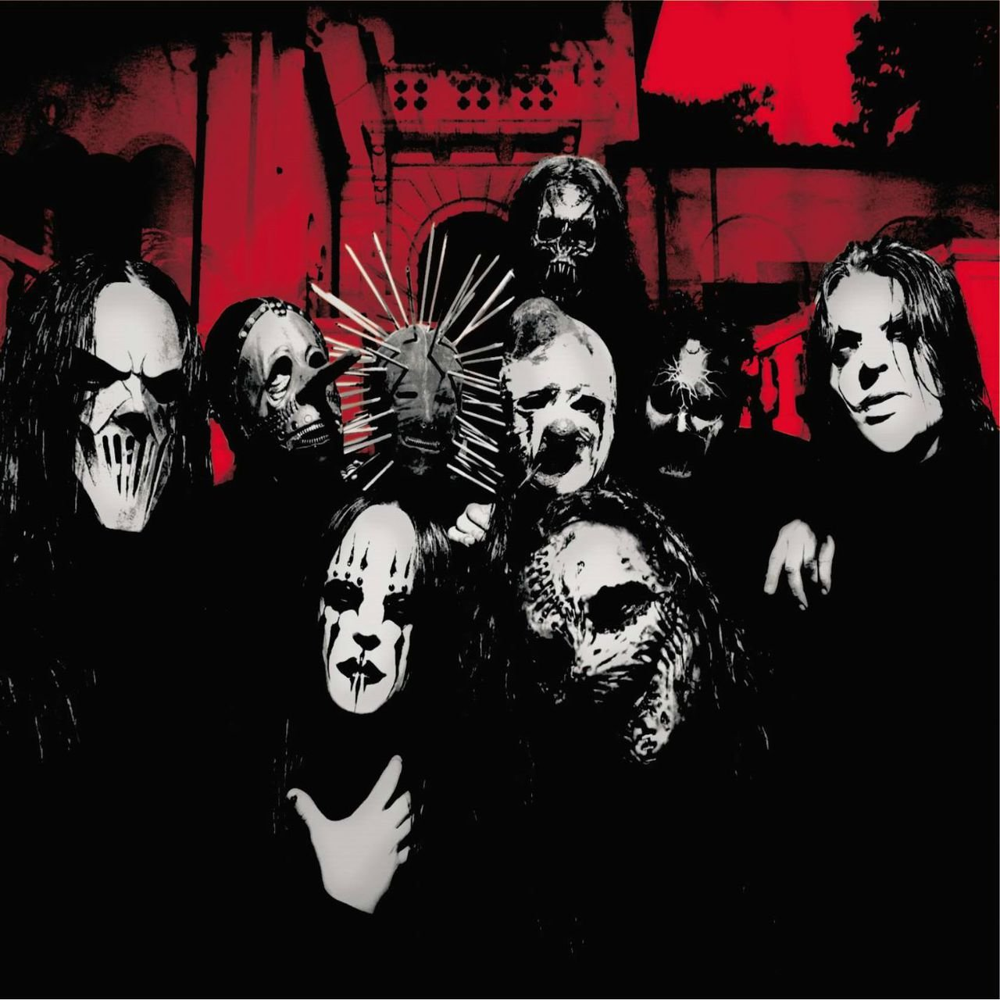
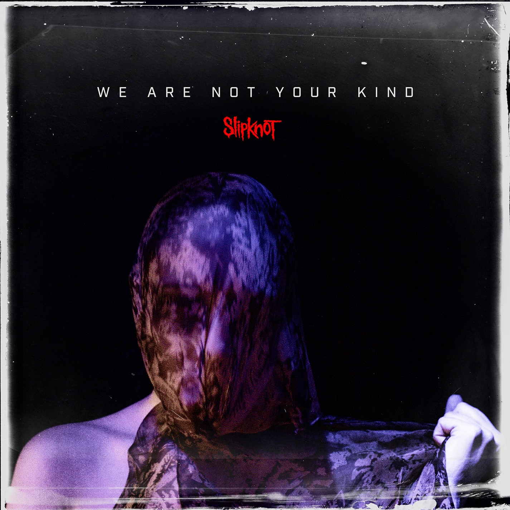

Slipknot foi o primeiro contato que eu tive com o gênero do nu metal e quando começei a escutar suas músicas eu me senti reconfortado pois suas letras eram muito empáticas.






Slipknot
Músicas
Algumas músicas da banda:
De sade do álbum The End
Duality do álbum subliminal verses
Nero forte do álbum we are not your kind
Override do álbum Gray chapter
Sulfur do álbum all hope is gone
Wait and bleed do álbum 10th anniversary
Introdução
Slipknot é uma banda norte-americana de metal formada em Des Moines, Iowa, em 1995. Seu estilo musical é o nu metal, que explodiu no fim dos anos 1990 nos Estados Unidos. A banda é conhecida por seu grande número de integrantes, pelas máscaras usadas por cada um, e pelos shows enérgicos, o que garantiu um número grande de fãs jovens até os dias atuais. Entre 1999 e 2010, a banda foi constituída por Sid Wilson, Chris Fehn, James Root, Craig Jones, Shawn Crahan, Mick Thomson, Corey Taylor, Paul Gray e Joey Jordison, responsáveis pela gravação de quatro álbuns de estúdio nesse período. Após a morte do baixista Paul Gray em 2010 e a saída do baterista Joey Jordison em 2013, Alessandro Venturella (baixo) e Jay Weinberg (bateria) foram escolhidos como substitutos. Em 2019, após um processo de Chris Fehn contra a banda, o percussionista a deixou, sendo substituído por Michael Pfaff.
História
Primeiros anos (1995 - 1998)
Em setembro de 1995 a banda "The Pale Ones" foi criada, com Shawn Crahan na bateria, Gray no baixo, Anders Colsefini nos vocais e Steele na guitarra. Joey Jordison ingressou na banda pouco depois, tendo o papel de baterista e, posteriormente, transferindo Crahan para a percussão. A banda continuou a desenvolver sua visão mais do que seria na banda, tomaram a decisão de acrescentar o segundo guitarrista, entrando em ação Josh Brainard e Colsefini mudando para a percussão junto com os vocais. A banda fez a sua primeira performance ao vivo sob o nome "Meld", em 4 de dezembro de 1995 em um clube chamado, The CroBar, em Des Moines. Logo depois, Jordison sugeriu a banda a mudar o nome para Slipknot, devido à música de mesmo nome da demo, Mate. Feed. Kill. Repeat. A banda também começou a experimentar sua imagem, vestindo roupas grotescas, e eventualmente, a anti-imagem foi conceito desenvolvido entre os membros usando máscaras e macacão industrial.
Com muitos materiais já prontos, a banda começou em um estúdio local, SR Áudio com Sean McMahon. Em fevereiro de 1996, o guitarrista Donnie Steele deixou a banda devido à sua crença cristã. Embora os outros membros da banda estivessem dispostos a permitir que ele ficasse, Steele decidiu sair. Seu substituto, Craig Jones, chegou durante o período de mixagem deste novo projeto. Em 4 de abril, o Slipknot fez sua primeira apresentação, no "Des Moines Reggae Clube The Safari", onde fez a maior parte dos seus primeiros shows. A banda começou a perceber mais uma vez que havia necessidade de uma mudança, uma vez que foram acrescentando samples em suas gravações, mas que não poderia produzir esses sons ao vivo. Posteriormente, Craig Jones mudou-se para tocar sampler e Mick Thomson foi trazido para ocupar o espaço na guitarra. Após o conflito sobre a mixagem e masterização, a banda liberou seu primeiro álbum Mate. Feed. Kill. Repeat. (MFKR), no Dia das Bruxas, em 31 de outubro de 1996.
Com a produção deste álbum, Sean McMahon começou a distribuir o registro e gestão das empresas, o que resultou em um airplay na rádio local e, por sua vez, ganhou um lugar no Dotfest. Slipknot havia retornado para o estúdio para desenvolver novos materiais, o que exigiu um vocalista com voz melódica e violenta. Como resultado, Corey Taylor foi contratado a partir de colegas da banda Stone Sour; sendo que Colsefini mudou-se para o vocal de apoio e percussão. Com o seu novo vocalista, a banda continuou a fazer shows no Safari, durante um dos quais momentos, Colsefini no show surpreendeu tanto os fãs quanto a banda no palco anunciando que ele estava saindo da banda. A vaga na percussão foi preenchida por Greg Welts, que era carinhosamente conhecido como Cuddles. No final de 1997, a banda começou a usar macacões como uniforme e atribuíram números individuais para cada membro, respectivamente.
Álbum de estreia e o sucesso comercial (1998 - 2001)
No início de 1998, a banda criou uma pequena demo, que incluía Spit It Out. O Slipknot Demo foi enviado para muitas gravadoras e, juntamente com uma crescente popularidade na Internet, o interesse cresceu a partir de gravadoras e eventualmente pelo produtor Ross Robinson. A banda, que tinha um forte interesse em trabalhar com Robinson, reuniu-se com ele e foi então decidido que iriam trabalhar em conjunto. Logo após, o DJ Sid Wilson foi levado à banda, e impressionou a todos pelo seu talento como DJ. Com a aquisição de Ross Robinson, a banda cresceu e começou a receber ofertas de gravadoras. Em 6 de julho de 1998, Welts foi convidado a deixar a banda, se tornando o primeiro e único membro da banda a ser despedido. Welts foi temporariamente substituído por Brandon Darner (que tocou apenas um show com a banda mas desenvolveu sua própria máscara). Em 8 de julho eles assinaram com a Roadrunner Records e em setembro, Chris Fehn assumiu a percussão herdando a máscara de Darner.
No final de 1998, Slipknot voltou ao estúdio de gravação para trabalhar em seu álbum de estreia. No início de 1999, por motivos pessoais o guitarrista Brainard decidiu deixar a banda, sendo substituído por James Root. Com a gravação concluída, no início de 1999, com "Me Inside" e "Purity", a banda participou do Ozzfest, que começou em março. Em 29 de junho de 1999, a banda liberou seu álbum auto-intitulado, Slipknot. Em relação ao álbum, Rick Anderson do Allmusic escreveu "Você pensou que Limp Bizkit era pesado? Eles são Os Osmonds. Slipknot é outra coisa completamente diferente." A banda se apresentou no Livin La Vida Loco Tour na turnê de apoio ao álbum Slipknot. O álbum Slipknot inclui variações de canções lançadas anteriormente, incluindo "(sic)", uma versão da canção anterior, "Slipknot". Essas versões foram mais rápidas do que as suas gravações anteriores e esta mudança foi saudada pelos antigos fãs. No mesmo ano, O Slipknot liberou seu primeiro vídeo caseiro, Welcome to Our Neighborhood (que mais tarde foi lançado em DVD em 2003). No início de 2000, Slipknot foi certificado com Disco de platina. Em julho de 2001, o álbum Slipknot entrou na lista dos "50 Álbuns mais pesados de todos os tempos".
Iowa e Projetos paralelos (2001 - 2003)
Após o sucesso de seu álbum de estreia, Slipknot decidiu entrar no estúdio novamente para gravar seu segundo álbum. Até então, a banda tinha criado uma grande base de fãs, e as expectativas para o acompanhamento do novo álbum foram ótimas. Iowa, o segundo álbum da banda com a Roadrunner Records, foi lançado em 28 de agosto de 2001. Jason Birchmeier do Allmusic comenta: "É realmente tudo que você poderia pedir em um álbum do Slipknot, e então alguns - talvez um pouco mais do que você gostaria, na verdade, se você não é parte do culto." David Fricke da revista Rolling Stone chamou o álbum de "o primeiro grande registro da era new metal."
Iowa também teve um grande sucesso comercial, atingindo a terceira colocação na Billboard, e primeiro lugar nas paradas do Reino Unido na categoria álbuns gráficos. Em meados de 2001, a banda saiu mais uma vez em turnê, passando pelos festivais Ozzfest e o Kill The Industry, em apoio ao álbum Iowa. Em 2002, a banda apareceu em um concerto na cena do filme Rollerball. No mesmo ano, passaram pela Europa na turnê The European Iowa Tour. A BBC afirmou que Slipknot roubou o espetáculo e provou entretenimento após a banda ter realizado um show no Reading Festival, na Inglaterra. Depois de excursionar pela Europa, a banda fez apresentações no Japão na Japan Iowa Tour. No mesmo ano, Slipknot liberou seu segundo visual de produção com o lançamento do seu DVD Disasterpieces.
Em 2002, saiu uma série de projetos musicais dos membros do Slipknot. O vocalista Corey Taylor e o guitarrista James Root retornaram para o Stone Sour, com o lançamento de seu álbum debut Stone Sour. O baterista Joey Jordison também tinha o seu próprio projeto, em que ele assumiu o papel de guitarrista no Murderdolls. Logo depois, Slipknot deu um tempo para trabalhar em um terceiro álbum no final de 2002, mas a banda estava com problemas. Neste momento, houve rumores que a banda poderia acabar, e assim, não teriam mais chances de haver um terceiro álbum. Em meados de 2003, Shawn Crahan tinha um novo projeto, para a surpresa de muitos, na qual ele trabalhou com o nomeado produtor Rick Rubin.
Vol. 3: (The Subliminal Verses), 9.0 Live e projetos paralelos (2003 - 2007)
No final de 2003, a banda Slipknot começou a escrever e gravar com o nomeado produtor Rick Rubin, que trabalhou com artistas como Red Hot Chili Peppers, Johnny Cash, System of a Down, Slayer e Linkin Park. A Roadrunner Records também anunciou que deixaria de distribuir álbuns na Escandinávia, devido às condições financeiras. No entanto, Slipknot conseguiu lidar com a gravadora Nuclear Blast Records no início de 2003 para os lançamentos na Escandinávia. A banda lançou seu terceiro álbum, Vol. 3: (The Subliminal Verses), em 24 de maio de 2004, que alcançou o segundo lugar na Billboard 200. Johnny Loftus do Allmusic chamou o álbum de "uma satisfação, cuidadosamente concebido de representação da banda e da carreira, até à data", enquanto Robert Cherry da Rolling Stone disse que o álbum é "novas experiências, mesmo com condições extremas, o que, em caso do Slipknot em meios de tradição canção de suas musicas estruturadas." O título do álbum indica que este é o seu terceiro álbum; os membros posteriores mencionaram que eles não consideram Mate. Feed. Kill. Repeat. como um álbum que reflete a banda. Em 2004, a banda excursionou no Ozzfest pela terceira vez; no mesmo ano, fizeram também sua primeira aparição no Download Festival. Em 2005, o Slipknot fez vários shows sem a presença de Shawn Crahan, que estava apoiando a sua esposa durante uma doença, incluindo o seu regresso ao Download Festival.
Pouco tempo depois, Slipknot lançou seu segundo álbum ao vivo, o 9.0: Live que incluía gravações de shows em Phoenix, Las Vegas, Osaka, Singapura e Tóquio. O álbum foi lançado em 1 de novembro de 2005 e foi indicado na Billboard 200 na 17º colocação. Em 2006, a banda ganhou o prêmio Grammy como Melhor Performance de Metal com a canção "Before I Forget". Mais tarde naquele ano, o Slipknot liberou também o seu terceiro DVD Voliminal: Inside the Nine. Vários membros da banda colaboraram com outros artistas sobre a Roadrunner United: The All-Star Sessions (CD lançado em outubro de 2005). Pelo registro, Joey Jordison foi nomeado como o "capitão da equipe"; Root, Taylor e Gray também contribuíram na produção do álbum. Em 2006, Root e Taylor, mais uma vez, retornaram ao Stone Sour produzindo seu segundo álbum Come What (ever) May. Joey Jordison tocou bateria para várias bandas ao mesmo tempo em turnê, incluindo Ministry e Korn. No final do ano, Shawn Crahan revelou um novo projeto paralelo, a banda Dirty Little Rabbits, onde Shawn toca bateria.
All Hope Is Gone (2008 - 2009)
Depois de algum tempo, o Slipknot lançou o tão aguardado quarto álbum, All Hope Is Gone, que foi liberado em todo o mundo em 20 de agosto de 2008. É o primeiro álbum do Slipknot a ficar no lugar de número 1 na Billboard 200. A preparação para o álbum começou em outubro de 2007, com gravação adiada para fevereiro de 2008. Para este lançamento, a banda manifestou o interesse de tornar o quarto álbum o mais pesado de todos até a data, com uma expansão do thrash metal introduzido no Vol. 3: (The Subliminal Verses). No entanto, eles também queriam deixar os seus experimentos na gravação, pretendendo incluir mais violões, vocais melódicos, e pratos na percussão. O álbum foi o primeiro trabalho da banda com Dave Fortman como produtor. Juntamente com o álbum, a banda estreou e "evoluiu" as máscaras e uniformes, o que corresponde ao estilo do álbum. Slipknot fez sua performance pela primeira vez no Mayhem Festival em julho e agosto de 2008. A banda estava agendada para tocar no Reading e Leeds Festival em agosto de 2008, mas foi obrigada a cancelar suas performances após o baterista Joey Jordison quebrar seu tornozelo.
O Slipknot também fez shows na Austrália, Japão, Europa e Reino Unido nos últimos meses de 2008, com as bandas Machine Head e Children of Bodom na abertura de seu shows. As datas de shows no Reino Unido foram anunciadas em 20 de agosto, e no início de dezembro, a turnê de All Hope Is Gone. A banda foi forçada a cancelar seu show em Israel, devido a dois dos membros estarem com problemas familiares; Corey afirmou que o show seria remarcado para a turnê. James também declarou em uma entrevista que "estavam apenas avaliando como poderiam descobrir uma maneira de lançarem algumas das músicas que criaram, mas não colocaram no álbum." tornando-se uma possibilidade de que All Hope Is Gone seria relançado, semelhante ao seu primeiro álbum, Slipknot.
O Download Festival 2009, que começou a partir dos dias 12, 13 e 14 de junho no Donington Park, em Leicestershire e Inglaterra, teve o Slipknot sendo anunciado como manchete do palco principal no sábado. O Slipknot saiu em turnê com a All Hope Is Gone World Tour, terminando-a no final do ano, depois de passarem por numerosos países. Depois da turnê, ainda anunciaram muito mais datas para espetáculos sendo eles CEZ Arena - Ostrava, República Tcheca, Rockwave Festival - Atenas, Grécia, Eurockeennes Festival - Belfort, França entre outros.
A banda entrou em férias, porém, em uma entrevista à Metal Injection, Joey falou sobre o retorno da sua banda paralela, o Murderdolls e ainda que o próximo álbum do Slipknot seria lançado em 2012. Foi confirmado que o Slipknot voltaria em 2011, liderando o Sonisphere Festival 2011 no Reino Unido e na França, o Graspop Metal Meeting 2011 no verão e o Rock in Rio, em setembro.
Morte de Paul Gray (2010-2011)
A polícia da cidade de Urbandale, no Iowa, afirmou que Paul Gray, baixista da banda Slipknot, foi encontrado morto em um quarto de hotel. A informação foi do jornal local “KCCI”.
O corpo de Gray foi encontrado por volta das 11h da manhã (horário local) no dia 24 de maio de 2010 no hotel Marriott da cidade. Não havia sinais de crime, mas a polícia fez uma investigação completa das razões da morte do músico. O corpo do baixista passou por uma autópsia e exame toxicológico.
Os oito integrantes do Slipknot se emocionaram bastante ao se pronunciarem pela primeira vez sobre a morte do companheiro em entrevista coletiva concedida no dia 25 de maio de 2010, um dia após o falecimento. Sem máscaras, eles falaram sem discurso e não responderam a perguntas. Os membros estavam acompanhados pela viúva do baixista, Brenna, que estava grávida de cinco meses. "Meu marido era uma pessoa maravilhosa e eu quero que ele seja lembrado por isso. E sua filha irá conhecê-lo pelo que ele foi", disse. Entre lágrimas, Corey Taylor comentou: "Perdemos nosso irmão, e o mundo parece menor após isso. Ele tinha o maior coração que qualquer um já conheceu". "A única palavra que pode resumi-lo é amor." Artistas também prestaram as últimas homenagens a Gray, entre eles, James Shaffer do KoЯn, Jacoby Shaddix do Papa Roach, Benji Madden do Good Charlotte e Wes Borland do Limp Bizkit. Sid Wilson gravou uma música para Paul Gray.
Tony Gray, irmão do baixista, ficou conhecido entre os fãs da banda pelo seu emocionante depoimento em rede mundial no encontro do Slipknot à imprensa após a morte de Paul.
Quanto a morte de Gray, Taylor explicou que Gray gostaria que eles continuassem, e com esse espírito que ele sentiu. Ele teve a inspiração de Vinnie Paul, que perdeu Dimebag Darrell em 2004, bem como Avenged Sevenfold, que perdeu seu baterista The Rev em dezembro de 2009. Foi confirmado que o Slipknot voltaria em 2011, liderando o Sonisphere Festival 2011 no Reino Unido, o Graspop Metal Meeting 2011 no verão, e o festival Rock in Rio em setembro.
A banda confirmou em março que o substituto de Paul Gray durante os shows de 2011 seria o ex-guitarrista Donnie Steele. Em 2011 o Slipknot cumpriu a sua "All Hope Is Gone Tour" declarando que Paul Gray não pode ser substituído. O show do Sonisphere U.K foi transmitido ao vivo no site oficial da banda. Um cabide com o uniforme de Gray e sua máscara ficaram presentes nos palcos da Tour e no final da última apresentação eles fizeram uma homenagem ao antigo baixista, tirando fotos com "ele" e o destaque foi Joey, que ficou abraçado ao "corpo" de Paul chorando por alguns segundos, isso ao som de "Til We Die" do album All Hope Is Gone. Recentemente a música "Flat Lace" de Sid Wilson lhe foi dedicada.
Quanto à continuação do Slipknot, Taylor disse mais tarde à NME que Paul Gray gostaria que eles continuassem. O Slipknot voltou aos palcos em 2011 para uma pequena temporada de shows na Europa. Eles se apresentaram no Festival Sonisphere e no Rock in Rio. Taylor declarou que os shows serviram como uma "homenagem" a Paul. Um dos fundadores do Slipknot, o guitarrista Donnie Steele substituiu Gray nos shows, no entanto tocando atrás do palco. O percussionista, Shawn Crahan, declarou que a banda iria fazer uma turnê nos Estados Unidos em junho de 2012.
Antennas to Hell e Saída de Jordison (2012-2013)
Em 29 de maio de 2012, a Roadrunner Records postou um vídeo em seu site intitulado Antennas to Hell. Mais tarde naquele dia, Corey Taylor revelou no Twitter que o Slipknot lançaria um álbum de grandes sucessos em 23 de julho de 2012. Ele também tuitou dizendo que a banda não estava gravando um material novo ainda, mas estavam preparando demos para um novo álbum.
No dia 4 de junho de 2012, foi anunciado no site oficial da banda o KnotFestival, o primeiro festival anual organizado pela banda, realizado nos dias 17 e 18 de agosto nos EUA, e com a presença das bandas Deftones, Lamb of God, Dethklok, The Urge, Cannibal Corpse e Serj Tankian.
Nos dias 12 e 13 de dezembro de 2013 um comunicado anunciando a saída do baterista Joey Jordison, foi publicado no site oficial da banda.
"Aos nossos fãs Maggots ao redor do mundo:
É com muita dor, mas com um respeito silencioso que, por razões pessoais, Joey Jordison está deixando o Slipknot. Todos nós desejamos ao Joey o melhor em tudo o que seu futuro reserva. Nós entendemos que muitos de vocês vão querer saber como e por que isto aconteceu, e nós faremos o nosso melhor para responder a essas perguntas em um futuro próximo. É o nosso amor por todos vocês, assim como por nossa música que criamos, que nos estimula a continuar e seguir em frente com nossos planos para lançar um novo material no próximo ano. Esperamos que todos vocês entendam isso, e nós apreciamos o seu apoio enquanto planejamos a próxima fase do futuro do Slipknot. Obrigado, The 'KNOT".
Em contrapartida, o baterista Joey Jordison, em sua página oficial no Facebook, se manifestou sobre sua saída do Slipknot.
""Aos meus fãs, amigos e colegas ...,
Eu gostaria de começar o Ano Novo, abordando os rumores recentes e especulações sobre a minha saída do Slipknot. Quero deixar bem claro que eu não desisti do Slipknot. Esta banda tem sido a minha vida nos últimos 18 anos, e eu nunca iria abandoná-la, muito menos os meus fãs. Esta notícia me chocou e me pegou de surpresa, tanto quanto vocês. Por enquanto, não há muito que eu gostaria de dizer, eu devo permanecer em silêncio neste momento. Eu gostaria de agradecer a todos pelo amor e pelo apoio incondicional, e desejar a todos um feliz e saudável Ano Novo."
.5: The Gray Chapter e Day of the Gusano (2014-2017)
Durante a edição do Grammy Awards 2014, o percussionista da banda, Shawn Crahan, apareceu no tapete vermelho junto com sua filha, Gabrielle Crahan, e de sua esposa Chantel Crahan, o que causou um grande alvoroço na mídia americana e nas redes sociais. Para algumas pessoas, isso foi uma jogada de marketing para divulgar o lançamento do novo álbum da banda, previsto para 2014.
Um esquema de segurança foi criado para o novo álbum da banda, que foi gravar o CD em 3 estúdios diferentes, para que não houvesse vazamentos de músicas – ainda assim, alguns dias antes do lançamento o álbum já estava disponível para download em sites de compartilhamentos.
Em uma entrevista para uma rádio americana, Corey Taylor afirmou que a banda teria novos uniformes, máscaras e um novo logotipo, e também havia um projeto de estender o KnotFest para o sul, centro-oeste e costa leste dos Estados Unidos em 2015 e torná-lo um festival multicidade. E também falou um pouco sobre o novo álbum: "Foi interessante, nós sabíamos que seria pesado, sabíamos que seria algo do tipo 'ok, estamos em território desconhecido, e agora?’ Sabe? Foi aí que o Jim e o Clown se colocaram a frente. Eles que começaram a colocar as coisas no lugar, então quando chegamos no estúdio já tínhamos um ótimo modelo de música para ouvir."
No dia 15 de julho de 2014, entrou no ar o site negative.slipknot1.com, onde era mostrado o primeiro teaser do novo álbum da banda; além disso, todas as imagens pretas foram substituídas pela imagem da nova logo da banda, um nonagrama vermelho com um circulo no centro dele, que anteriormente ficava em volta das pontas do nonagrama.
No dia 01 de agosto de 2014, foi lançado o single "The Negative One" e em 24 de agosto de 2014, o Slipknot lançou seu segundo single nomeado "The Devil in I". Também anunciou que seu novo álbum se chamaria .5: The Gray Chapter e que seria lançado em todo o mundo no dia 21 de outubro de 2014. Lançado em 15 de outubro de 2014 no Japão, em 17 de outubro de 2014 na Austrália, Bélgica e Países Baixos, em 20 de outubro de 2014 no Reino Unido e em 21 de outubro de 2014 no resto do mundo, seis anos após o lançamento do quarto álbum estúdio da banda, foi o primeiro desde a morte do baixista Paul Gray em 2010, e sem Joey Jordison, desligado da banda em 2013. A banda fez uma turnê de divulgação do álbum chamada de "Prepare for Hell Tour", junto com as bandas Korn e King 810 que começou no Knotfest 2014 e se estendeu até 2015. A banda se apresentou no dia 25 de setembro no Rock in Rio 2015, como atração principal da noite do Metal.
Durante sua apresentação solo em julho de 2015, Corey respondeu algumas perguntas dos fãs e comentou sobre como seria o futuro da banda. Segundo ele, após o fim da turnê do The Gray Chapter em 2016, a banda faria uma pausa para focarem em seus projetos paralelos e provavelmente retornariam com a ideia de um álbum duplo.
Em 2017 a banda lançou Day of the Gusano, documentário que conta com uma apresentação ao vivo da banda em 2015 no México, e que também apresenta trechos de ensaios e depoimentos dos membros da banda sobre o relacionamento entre a banda e os fãs.
All Out Life, Saída de Chris Fehn e Novo Álbum (2018-2019)
Em novembro de 2018, O vocalista Corey Taylor revelou, por meio do Twitter, quais os próximos planos do Slipknot. Segundo o cantor, a banda entraria em estúdio para gravar seu aguardado novo álbum em janeiro de 2019. O lançamento deveria ficar para o meio do ano, ainda de acordo com ele. Em 18 de março de 2019, o Slipknot divulgou uma nota oficial para comunicar a saída do grupo do percussionista Chris Fehn. A saída do músico, segundo comunicado publicado no site oficial da banda, ocorreu após ele mover uma ação judicial contra o Slipknot.
“Ele sabe o motivo pelo qual não faz mais parte do Slipknot. Estamos desapontados pela acusação e falsas reivindicações, em vez dele fazer o que era necessário para continuar na banda“, diz trecho da nota que destacava que naquele momento o foco do grupo estava na produção de seu sexto álbum de estúdio e em suas próximas apresentações ao redor do mundo.
Em sua defesa, o músico alegou algumas irregularidades nas contas da banda, além de relatar que também não estaria recebendo sua devida quantia do cachê pelas turnês.
We Are Not Your Kind (2019-2021)
No dia 16 de maio de 2019, a banda lançou seu novo single com um clipe no youtube, Unsainted, que estaria presente no novo álbum, chamado We Are Not Your Kind. Nesse dia, também foram apresentados o novo design da banda, com máscaras e roupas novas; e o título e a tracklist do novo álbum, que foi lançado em 9 de agosto. A música recebeu críticas e muitos elogios. Foi criticada por parecer muito melódica, "afastando-se" um pouco da essência de Iowa prometida por Corey Taylor em 2018 para o novo álbum. Mas ela também recebeu elogios por ser bastante agressiva, remetendo aos primeiros discos. No videoclipe da música, a banda faz uma apresentação das novas máscaras e do novo misterioso membro, que no momento substitui o percussionista Chris Fehn. Segundo alguns fãs, o novo membro é o músico Zach hill, da banda Death Grips e também da banda Hella. A conclusão nasceu de uma suposta semelhança no olho do novo membro mostrado no vídeoclipe, além de Zach ser visto nos bastidores do palco no Jimmy Kimmel junto com a banda.
Anteriormente, em 31 de outubro de 2018, a banda lançou o single All Out Life, que contém em sua letra uma frase cuja é o título do novo álbum. Apesar disso, a faixa não esteve presente no novo trabalho da banda.
No dia 17 de maio, um dia após o lançamento da música Unsainted, o Slipknot se apresentou no programa Jimmy Kimmel, dos Estados Unidos, para realizar uma apresentação rápida ao vivo num palco, para mostrar as duas novas músicas.
A banda também realizou uma entrevista para a revista Kerrang!, onde fala um pouco sobre o novo visual, o título do álbum e a essência das músicas. Corey Taylor, que foi muito criticado pela sua nova máscara, alegou que a essência da mesma foi inspirada no sentimento de que ele estava se sentindo um vilão, e que seu novo visual foi feito para deixar as pessoas que o fazem se sentir um vilão desconfortáveis. "Vocês querem um vilão? Então vão ter", alega o vocalista.
O músico também explicou o título do novo álbum. Para ele, a frase "we are not your kind" seria apenas uma expressão legal e cativante a ser cantada pelos fãs nos shows, na música All Out Life. Mas que, depois, todos os integrantes refletiram e concordaram que a frase também seria um nome ideal para o título do novo álbum, por representar a fase atual da banda, uma fase onde eles podem mostrar quem são sem precisar dar satisfação a críticos. "We are not your kind" pode ser traduzido como "Não somos da sua espécie", no caso, um jeito de dizer que os fãs e a banda são algo mais.
Ainda sobre a essência do novo álbum, Corey, em seu twitter, deu um spoiler. Segundo ele, o disco "teria momentos Iowa, e também teria momentos Vol.3. Mas que teria principalmente momentos WANYK". Liricamente, é totalmente Iowa, mas musicalmente é experimental e tem momentos de diversas essências.
Na entrevista, quando perguntado sobre o novo membro, Clown afirmou "quem ele é, não é da conta de ninguém".
The End, So Far (2021-presente)
Em 2021, Shawn Crahan revelou em uma entrevista que possivelmente haveria um álbum novo do Slipknot em 2021. Também disse que após este álbum, o Slipknot iria se separar da Roadrunner Records.
Em julho de 2021, o baterista Joey Jordison morreu enquanto dormia, aos 46 anos.
Já em novembro do mesmo ano, anunciaram a música deles "The Chapeltown Rag". Esta mesma música foi eleita pela Loudwire como a 17ª melhor música de metal de 2021. Em Julho de 2022, Revelaram o nome de seu sétimo álbum de estúdio, The End, So Far, e lançaram a música "The Dying Song (Time to SIng)" Em agosto, lançaram "Yen". O álbum foi lançado no dia 30 de setembro de 2022.
No dia 18 de dezembro de 2022, foi realizada aprimeira edição do Knotfest Brasil, no Sambódromo do Anhembi, em São Paulo.
O single "Bone Church" foi lançado pelo Slipknot (ainda pela Roadrunner) foi lançado no dia 2 de fevereiro de 2023, sem anúncio prévio.
No dia 7 de julho de 2023, foi anunciado via o Instagram oficial da banda que estavam se separando de Craig Jones, que foi membro por 27 anos, e era responsável por tocar teclado e samples. Poucas horas depois, a postagem original foi apagada da página da banda, e a foto de uma figura mascarada com uma máscara não antes vista foi postada.
Na manhã do dia 8 de julho do mesmo ano, foi postado nas redes sociais da banda um vídeo enigmático de 19 segundos, que redireciona os fãs ao site "youcantkillme.com" (você não pode me matar). O site contém supostamente uma nova faixa instrumental do grupo intitulada de "Death March". Já no dia 9 do mesmo mês, foi lançado sem anúncio prévio um EP com seis faixas, o Adderall, e um videoclipe para “Memories (Adderall – Rough Demo)”. O EP contém novas versões da música "Adderall".
Em um Story do Instagram (agora deletado) pelo percussionista Michael Pfaff, era possível avistar o nome "Zac" ao lado dos itens pessoais do Mick Thomson. Este ocorrido levou os fãs da banda à acreditarem que o novo tecladista da banda, que substituiria Craig Jones seria Zack Baird, porém nada foi confirmado oficialmente pela banda.
Influência e Estilo
A banda tem afirmado que suas principais influências incluem Metallica, Pantera, Sepultura, Led Zeppelin, Black Sabbath, Slayer, Judas Priest, Korn, Ministry, AC/DC, Kiss e Beastie Boys. O death metal e heavy metal tradicional têm sido mencionados como uma das principais influências da banda sobre a direção musical juntamente com nu metal, como a banda geralmente é apresentada. Eles também afirmaram que são influenciados por bandas industriais como Head of David, Godflesh e Skinny Puppy, ou também Neurosis e jungle music como Roni Size.
Eles podem ser comparados com grupos como Pantera, Machine Head, Biohazard, Life of Agony, e Prong, que também são conhecidos por serem caóticos e energéticos nos shows ao vivo. Robert Cherry da Rolling Stone chamou o som sonoro do Slipknot de "uma máquina debulhante devorando um corpo militar.". Em trabalho mais recente, o estilo de "vocal escandaloso" continua presente, mas agora inclui mais melodias. As letras geralmente seguem uma tom muito agressivo e apresentam temas como a escuridão, niilismo, raiva, desinteresse, ódio, misantropia, nocaute e psicose. Rick Anderson do Allmusic respeita as letras do grupo, como "geralmente não cotável para um site de família". Houve controvérsia em torno das letras do Slipknot, incluindo um caso em que um par de jovens assassinos culpou a letra da canção "Disasterpiece" como um crime vicioso, e um caso em 2006, em que a letra da canção "Surfacing" foi encontrada no local de uma sepultura. No ano de 2008, um jovem de 18 anos assassinou um colega de classe na África do sul. O homicida empunhava uma espada e tinha uma máscara kabuki parecida com a de Joey Jordison, do Slipknot, de acordo com o depoimento de autoridades e testemunhas. "Sabemos que a música errada e as drogas dão mau resultado. Os mais novos precisam estar informados sobre os efeitos da música satânica", defende Pierre Efsteen, diretor de uma instituição de apoio a estudantes. Já a polícia sul-africana tem uma opinião distinta: "Sempre que há um homicídio, as pessoas tiram conclusões precipitadas, e acham sempre que foi Deus ou o Demônio que mandou os assassinos matarem", lembra o chefe do departamento de psicologia da polícia local. A banda não se pronunciou sobre o ocorrido.
Imagem
A banda é conhecida por sua imagem que chama a atenção. Os membros vestem uniformes industriais, têm máscaras exclusivas, respectivamente, e têm apelidos que são simplesmente números de #0 a #8. A ideia original de usar máscaras durante os shows é muitas vezes atribuída à uma máscara de palhaço que o percussionista Shawn Crahan trazia para os ensaios, quando a banda começou. Com o conceito que foi desenvolvido no final de 1997, a banda decidiu que cada músico teria que usar máscaras e macacões originais correspondentes. O vocalista Taylor disse, quando questionado sobre as máscaras em 2002: "É a forma de nos tornarmos mais íntimos com a música, é uma maneira de nos tornarmos inconscientes de quem somos e o que fazemos fora da música". O conceito dos macacões industriais tem sido descrito como uma resposta ao mercantilismo no negócio da música e levou à ideia de atribuir os membros da banda aliases numéricos. "Originalmente, nós iríamos vestir os macacões [...] achamos que poderíamos muito bem levar isso diante de nós mesmos. [...] Nós estávamos basicamente dizendo: 'Ei, nós somos um produto!" explicou Taylor. Sua imagem tem sido alvo de muitas críticas, geralmente considerada como um artifício para tentar vender mais álbuns. A banda critica fortemente essas reivindicações, proclamando que as máscaras são usadas para chamar a atenção sobre si mesmos como indivíduos e colocá-los na música. Vários membros da banda têm observado que o uso das máscaras também ajuda a manter sua vida pessoal privada. Durante uma entrevista em 2005, o então percussionista Chris Fehn chegou a dizer que era uma "bênção" eles não serem reconhecidos.
Ao longo da sua carreira, Slipknot tem sempre desenvolvido a sua imagem, mudando os uniformes e máscaras de cada membro em conformidade com o lançamento de cada álbum. As máscaras não mudam completamente, mas contém novos elementos. O baterista Joey Jordison abordou a questão em uma entrevista em 2004, afirmando que é para mostrar crescimento e diferença dentro da idade de cada indivíduo. Ao lado de suas máscaras habituais, o Slipknot incorporou máscaras especiais por razões específicas ao longo de sua carreira. Mais notavelmente, para o vídeo e performances ao vivo da música "Vermilion" em 2004 e 2005, os integrantes da banda usavam máscaras da morte feitas a partir de moldes do próprio rosto. Então, em 2008, a banda usava um conjunto de grandes máscaras, chamadas "máscaras do purgatório", que são vistas queimando no vídeoclipe da música Psychosocial. No início, as máscaras do Slipknot eram feitas por eles mesmos; no entanto, desde 2001, elas passaram a ser criadas pelo artista de efeitos especiais e músico Screaming Mad George.
Formação
Integrantes Atuais
- #0 Sid Wilson - DJ (1998-presente)
- #4 James Root - guitarra (1999-presente)
- #6 Shawn Crahan - percussão e vocal de apoio (1995-presente)
- #7 Mick Thomson - guitarra (1996-presente)
- #8 Corey Taylor - vocais (1997-presente)
- Alessandro Venturella - baixo (2014-presente)
- Jay Weinberg - bateria (2014-presente)
- Michael Pfaff - percussão e vocal de apoio (2019-presente)
Ex-integrantes
- #1 Joey Jordison (falecido) - bateria (1995-2013)
- #2 Paul Gray (falecido) - baixo (1995-2010)
- #3 Chris Fehn - percussão e vocal de apoio (1998-2019)
- #4 Josh Brainard - guitarra rítmica (1995-1999)
- #5 Craig Jones - sampler e teclado (1996-2023)
- Donnie Steele - guitarra solo (1995-1996), baixo (2011-2013)
- Anders Colsefini - vocais e percussão (1995-1997)
- #3 Greg Welts - percussão (1997-1998)
- Brandon Darner - percussão (1998)
- Patrick M. Neuwirth - guitarra (1992)
- Quan "Meld" Nong - guitarra (1995)